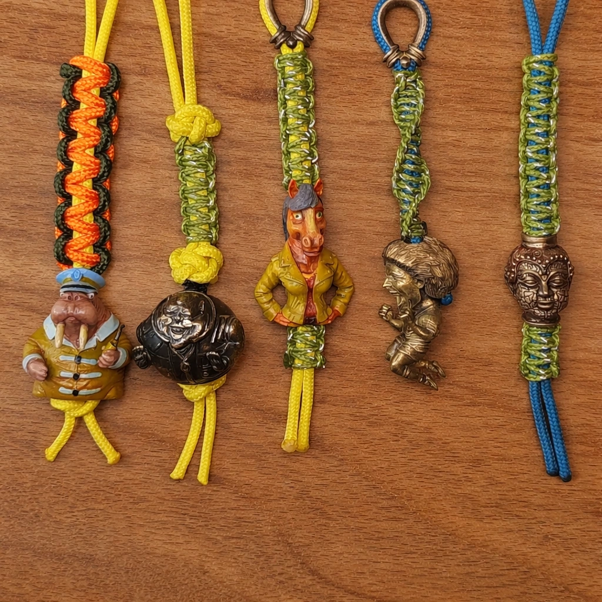
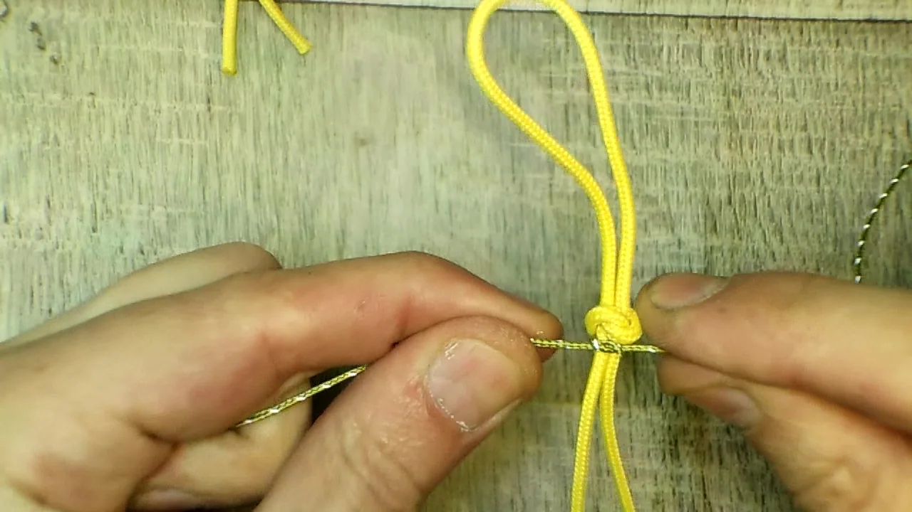
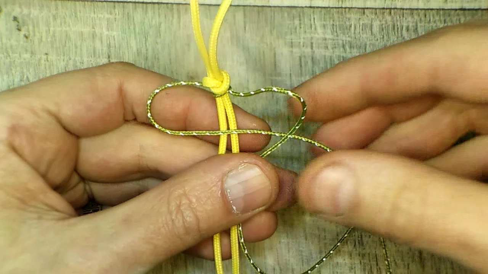
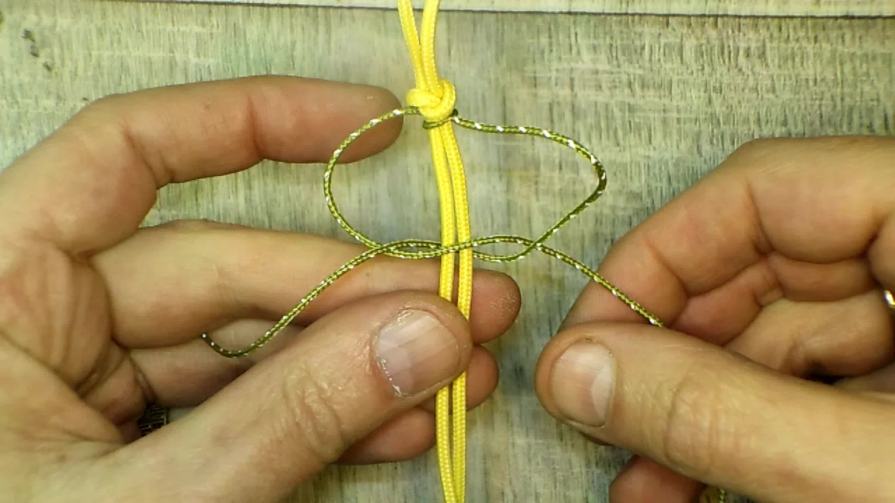
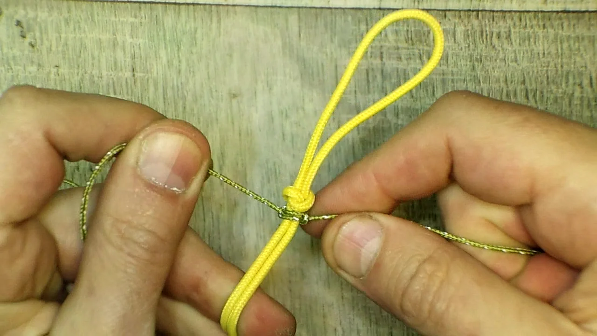
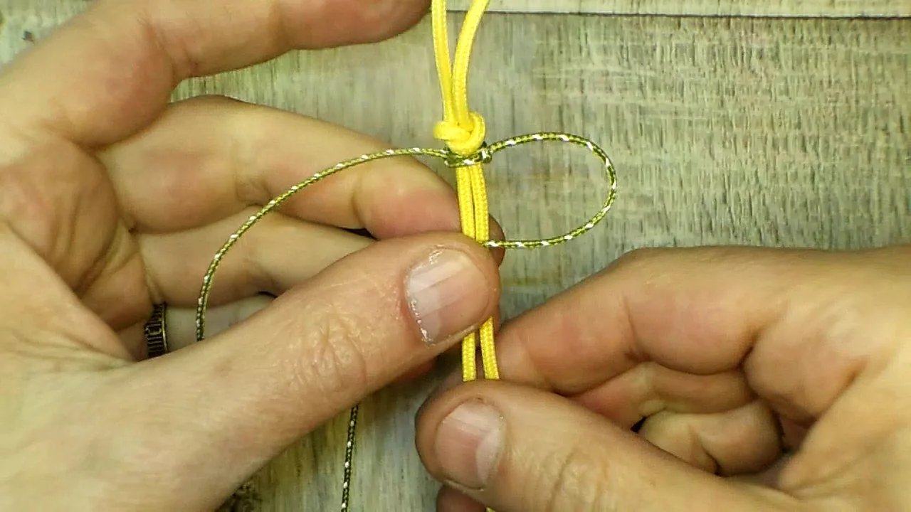
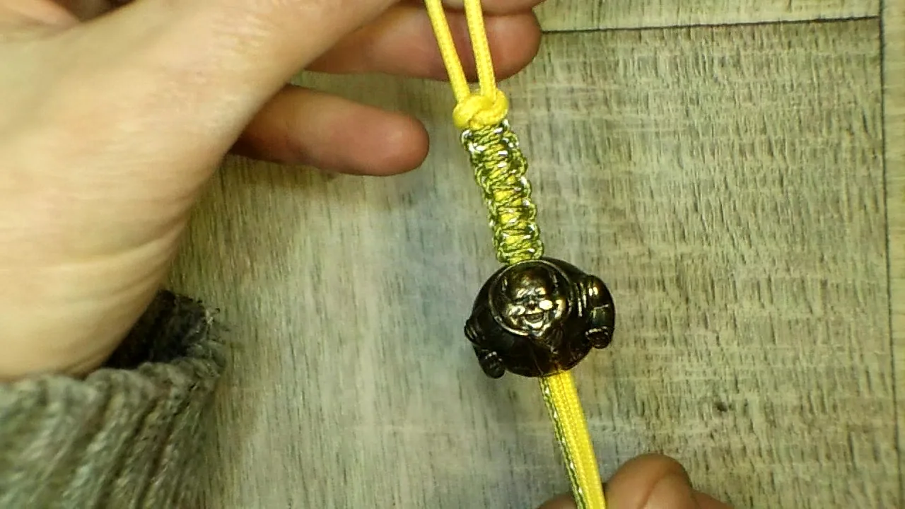

Такую “кобру” удобно использовать как тонкую декоративную оплётку на темляке, когда хочется добавить рисунок, но не делать сам подвес слишком массивным.
В этом варианте основой служит паракорд 275, а само плетение выполняется микрокордом. Верхний стартовый узел может быть любым — в примере я использовал змеиный узел, потому что он оказался самым логичным стартом для этого темляка.
Ниже показано именно плетение “кобра” с микрокордом на темляке: как зафиксировать микрокорд, сделать первые стежки и дальше вести рисунок по двум жилам. Если сначала нужна сама основа, рядом держите статьи про плетение “змейка” и про змеиный узел на темляке.
Содержание
- Что понадобится
- С чего начинается эта оплётка
- Плетение “кобра” пошагово
- Как сделать оплётку ровной
- Что делать дальше
- Видео процесса
- Частые вопросы
Что понадобится
- Паракорд 275 — в этом примере он используется как сердечник темляка.
- Микрокорд длиной примерно 30 см для короткой оплётки такого размера.
- Готовый верхний узел на темляке. Он может быть любым; здесь в качестве старта использован змеиный.
- Ножницы и при необходимости зажигалка для обработки концов после окончательной сборки.
С чего начинается эта оплётка
По сути это компактная “кобра” на сердечнике из паракорда. Сначала микрокорд нужно просто зафиксировать под верхним узлом, а уже потом начинать сам рисунок. Поэтому стартовый узел здесь предельно простой: его задача не красота, а надёжная фиксация.
После этого плетение идёт в привычном ритме: одна петля с одной стороны, второй конец навстречу, затем аккуратная затяжка. При таком масштабе особенно важно не спешить — микрокорд тонкий, и любые перекосы на нём видны сразу.
Плетение “кобра” с микрокордом: пошагово
Зафиксируйте микрокорд под верхним узлом

Подведите микрокорд под две жилы паракорда и сделайте самый простой фиксирующий узел сразу под верхним узлом темляка. Здесь не нужно усложнять конструкцию: главное, чтобы старт не расползался и микрокорд держался по центру.
Сформируйте первую петлю “кобры”

Одним концом микрокорда сделайте первую боковую петлю вокруг сердечника. Размер этой петли лучше сразу держать умеренным: он станет ориентиром для всего дальнейшего рисунка.
Заведите второй конец навстречу

Второй конец проведите навстречу, чтобы собрать первый полноценный стежок. Важно не перетянуть одну сторону раньше времени: сначала соберите форму, а уже потом затягивайте.
Подтяните первый стежок

Когда рисунок собран без перекрутов, аккуратно подтяните микрокорд. Первый стежок лучше затягивать спокойно, проверяя, чтобы обе стороны легли симметрично.
Начните следующий стежок тем же ритмом

Дальше плетение повторяется по тому же принципу: новая петля, встречный проход и аккуратная затяжка. Если старт получился ровным, весь участок дальше собирается уже заметно легче.
Продолжайте до нужной длины оплётки

После нескольких повторов получается аккуратная тонкая “кобра”, которая хорошо работает как цветовой акцент на темляке и при этом не утолщает его слишком сильно.
Как сделать оплётку ровной
На микрокорде особенно заметна разница в натяжении, поэтому лучше работать короткими спокойными движениями. Не пытайтесь сразу затянуть стежок до упора: сначала выровняйте контур, потом подтяните его и сравните с предыдущим.
Ещё один важный момент — размер петель. Если первый стежок получился слишком крупным, весь последующий участок будет выглядеть рыхло. Если же старт перетянуть, рисунок станет жёстким и потеряет ритм. Лучше с самого начала задать умеренную плотность и дальше держать её.
Что делать дальше
Если этот материал уже разобран, дальше лучше перейти к ближайшим связанным темам — без длинного списка и лишних повторов.
Видео процесса
Частые вопросы
Обязательно ли делать верхний узел именно змеиным?
Нет. Верхний узел может быть любым. В этом примере использован змеиный просто потому, что он уже был самым логичным стартом для этого темляка.
Сколько микрокорда нужно на такое плетение?
Для короткого участка, как в примере, хватит примерно 30 см. Если хотите длиннее, закладывайте запас.
Можно ли сделать такую “кобру” не на паракорде 275?
Можно. Но на более толстом сердечнике рисунок будет смотреться иначе. Здесь паракорд 275 даёт аккуратную тонкую основу под микрокорд.
Чем это плетение отличается от обычной “кобры” из паракорда?
Принцип тот же, но из-за тонкого микрокорда рисунок получается деликатнее и компактнее. Это удобно, когда нужен не массивный темляк, а аккуратная оплётка.